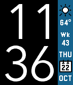
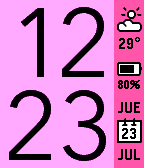
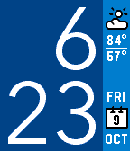

  
Inspired by the visual language of the Pebble Timeline, this template allows you to create website that shares visual charactertistics with the Pebble watch's iconic Timeline interface—perfect for showcasing your Pebble app, or even for your next watch-related blog!
<div class="pin">
<img src="images/pin_icons/NOTIFICATION_FLAG.svg" alt="Star icon">
</div>
Awesome! Just fork it on GitHub!